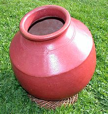

The Ghatam is a percussion instrument used in the Carnatic music of South
India. A variant played in Punjab and known as gharha as is a part of Punjabi
folk traditions. Its analogue in Rajasthan is known as the madga and pani mataqa
("water jug").
The ghatam is one of the most ancient percussion instruments of South India. It
is a clay pot with narrow mouth. From the mouth, it slants outwards to form a
ridge. Made mainly of clay backed with brass or copper filings with a small
amount of iron filings, the size of the ghatam varies according to its pitch.
The pitch can be slightly altered by the application of plasticine clay or
water.
Although the ghatam is the same shape as an ordinary Indian domestic clay pot,
it is made specifically to be played as an instrument. The tone of the pot must
be good and the walls should be of even thickness to produce an even tone.
Ghatams are mostly manufactured in Manamadurai, a place near Madurai in Tamil
Nadu. Though this instrument is manufactured in other places like Chennai and
Bangalore, too, Manamadurai ghatams have special tonal quality. It is believed
that the mud is of special quality. The Manamadurai ghaṭam is a heavy, thick pot
with tiny shards of brass mixed into the clay. This type of ghaṭam is harder to
play but produces a sharp metallic ringing sound which is favored by some
players.

The pot is usually placed on the lap of the performer, with the mouth facing the
belly. The performer uses the fingers, thumbs, palms, and heels of the hands to
strike its outer surface to produce different sounds.
Different tones can be
produced by hitting areas of the pot with different parts of the hands.
Sometimes the ghatam is turned around so that the mouth faces the audience and
the performer plays on the neck of the instrument. The ghatam can be moved to
other positions while being played. Occasionally, the performer will, to the
amusement of the audience, toss the instrument up in the air and catch it. The
ghatam is ideal for playing rhythmic patterns in very fast tempo.
The ghaṭam usually accompanies a mridangam.
Etymology:
The word ghaṭa in Sanskrit means "pot". Variations of this term are used in
modern Indian languages.
Similar instruments:
The madga is a north Indian version of the south Indian ghaṭam and is made from
a very special clay. The maker sometimes adds some kind of metal or graphite
dust to the clay which is responsible for the blue-gray appearance and for the
special sound.
The madga can be played similarly to the ghaṭam. Loud bass tones can be produced
if one hits with the flat hand the opening at the top of the instrument. The
madga can be played with mallets (sticks) and there are many sounds which can be
produced with this instrument. It is thinner than a ghaṭam but very stable and
not as fragile as one might think.
In Gujarat, the instrument is known as matka and features an almost perfectly
round shape and is made in many villages in and around Jaipur (Rajasthan) and
Gujarat. The matka is used to store water and sometimes yogurt (curd) and can be
used as a cooking vessel.
When used as a musical instrument in folk music, it is
known as ghaṛa and is played in a similar manner as the South Indian ghaṭam but
the technique and rhythmic style is not as refined as that of Carnatic ghaṭam.
Another difference is that the ghara is often traditionally played with metal
rings on the thumbs, index, middle, and ring fingers of both hands (but players
vary on how many rings and fingers are used).
There are a few versions of this
instrument. Some are made from a black clay that typically comes from a single
area in Rajasthan while many others in Rajasthan and Gujarat are made from a
reddish clay. A third version of the ghaṛa is made from reddish clay but
features a much flatter, squat shape.
Both of the red clay types can also be
found highly decorated with colorfully painted designs while the black ones are
usually plain and unfinished. The black ghaṛas are extremely light but very
dense and have a huge sound. The shell tones ring in a bell-like fashion with
much more of a sustain than the various South Indian ghaṭams (although the
Mysore ghaṭam comes close).
The bass tones of this instrument are very
prominent. Since these instruments are fired at a much higher temperature for a
longer time than South Indian ghaṭams, there is more consistency between
instruments in terms of Western pitch. In other words, there is much less
variation in the tuning when compared with ghaṭams from South India, which can
range from a low B up to a high A chromatically. Ghaṛas or matkas are usually
found with a range from approximately C or C# to D (or slightly higher) although
there does not seem to be any indication that these instruments are constructed
with tuning considerations. Other spellings for matka include mutkay and madga.